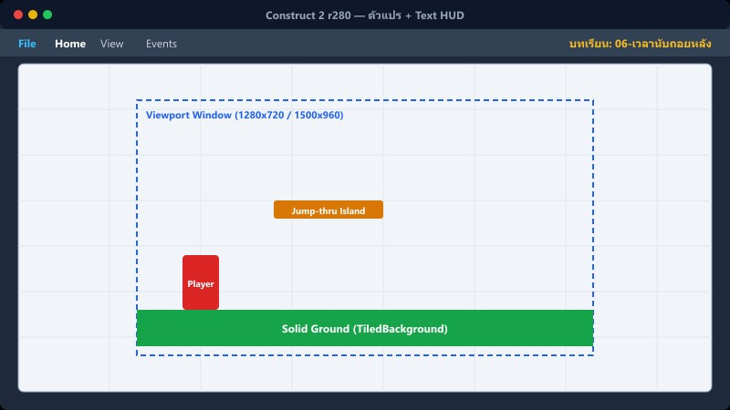
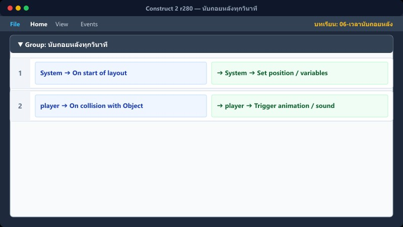
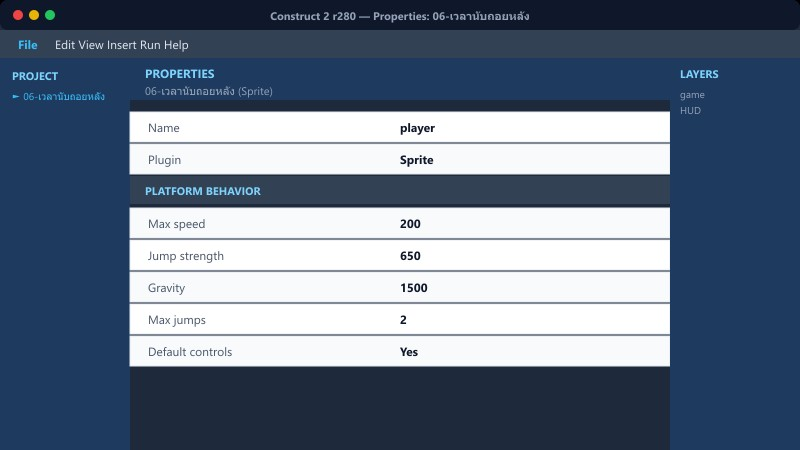
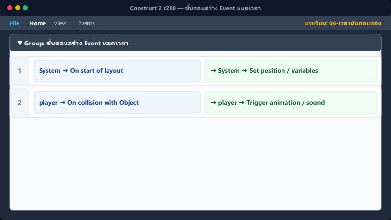

เป้าหมายบทนี้: ให้นับเวลาถอยหลังตามด่าน แสดงบน HUD และจบเกมเมื่อหมดเวลา
ตั้งเวลาเริ่ม→Every 1s→อัปเดต HUD→หมดเวลา
1ตัวแปร + Text HUD

game sheet + Layout HUD
- Global: เวลา (Number)
- วาง Text ชื่อ time_text บน Layer HUD
อัปเดตข้อความ: "เวลา : " & เวลา
2ตั้งเวลาตอนเริ่มด่าน

กลุ่ม “เริ่มด่าน+เพลง+เวลา”
LayoutName = "game" → เวลา=200 + Music2
="game2" → 150 + PirateShip
="game3" → 120 + ElmyraMiniboss
ระบบโจทย์อาจเขียนทับ game2→180, game3→160 ทีหลัง — ดูบท 10
3นับถอยหลังทุกวินาที

System → Every X seconds → 1.0
กำลังจบด่าน = 0 (ยังไม่เคลียร์)
Subtract 1 from เวลา
time_text → Set text
4หมดเวลา → Game Over

เวลา ≤ 0 + Trigger once + กำลังจบด่าน=0
โชว์ layer popup · ซ่อน/ล็อกผู้เล่น · บันทึกอันดับ = 1
เคลียร์ด่านสำเร็จ: คะแนน += เวลาที่เหลือ (บท 13)
5ขั้นตอนสร้าง Event หมดเวลา

- Add condition: System → Compare variable → เวลา ≤ 0
- Add: Trigger once while true
- Actions: Set layer popup visible · Set บันทึกอันดับ = 1